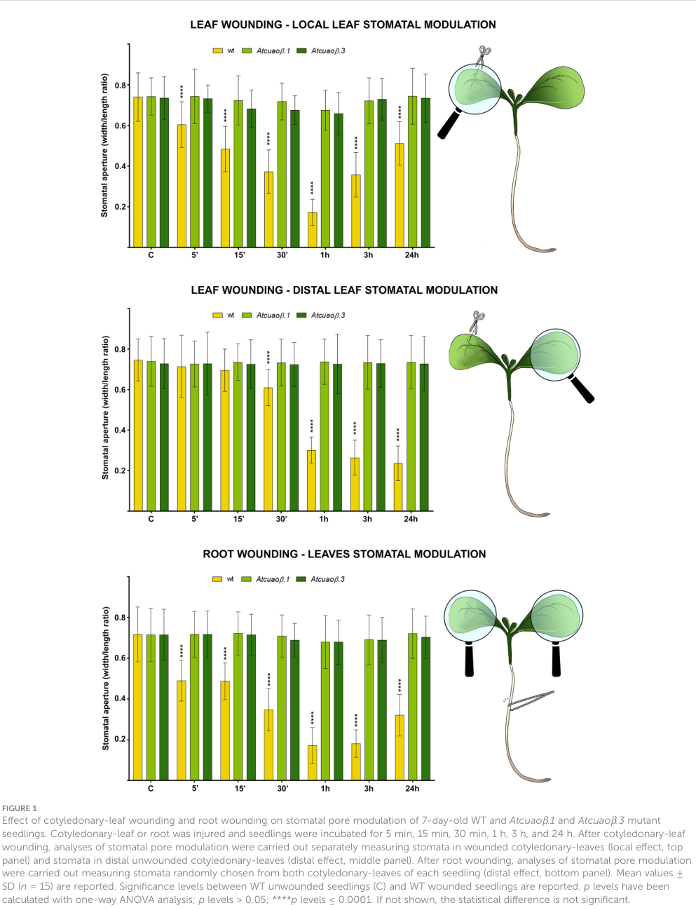

NaMPO1_candidate_AMO_3 is the best current NICAT mapping for the classical MPO1 step that oxidizes N-methylputrescine toward the N-methyl-Delta1-pyrrolinium branch intermediate. UniProt already assigns the exact N-methylputrescine oxidase reaction and nicotine-pathway placement to this peroxisomal copper amine oxidase, making it a strong upstream pathway anchor rather than a loose family candidate.
Definition: Catalysis of the oxidation of N-methylputrescine to 4-methylaminobutanal, hydrogen peroxide, and ammonium during nicotine biosynthesis.
Justification: The available GO terms capture only broader primary amine or diamine oxidase chemistry, whereas the nicotine pathway uses a specific N-methylputrescine oxidase step.
Parent term: primary methylamine oxidase activity
Supporting Evidence:
| GO Term | Evidence | Action | Reason |
|---|---|---|---|
|
GO:0005507
copper ion binding
|
IEA
GO_REF:0000120 |
ACCEPT |
Summary: Copper binding is an appropriate cofactor annotation for this amine oxidase.
Reason: Copper is explicitly curated as a cofactor for this topaquinone-dependent oxidase family.
|
|
GO:0005777
peroxisome
|
IEA
GO_REF:0000120 |
KEEP AS NON CORE |
Summary: Peroxisomal localization is plausible and worth retaining as non-core context.
Reason: UniProt places this candidate in the peroxisome, but the main review conclusion is the catalytic pathway role.
Supporting Evidence:
file:NICAT/NaMPO1_candidate_AMO_3/NaMPO1_candidate_AMO_3-uniprot.txt
CC -!- SUBCELLULAR LOCATION: Peroxisome
|
|
GO:0008131
primary methylamine oxidase activity
|
IEA
GO_REF:0000120 |
ACCEPT |
Summary: This is the best current GO molecular-function term for MPO1 chemistry.
Reason: UniProt assigns the exact oxidation of N-methylputrescine to this copper amine oxidase.
Supporting Evidence:
file:NICAT/NaMPO1_candidate_AMO_3/NaMPO1_candidate_AMO_3-notes.md
UniProt curates A0A314KPU1 as AMO_3, assigns the exact oxidation of N-methylputrescine to 4-methylaminobutanal, places the protein in nicotine biosynthesis, and localizes it to the peroxisome.
|
|
GO:0009308
amine metabolic process
|
IEA
GO_REF:0000120 |
MARK AS OVER ANNOTATED |
Summary: This process annotation is true but too broad to be the main curation outcome.
Reason: The informative biology here is the specific MPO1 step in nicotine biosynthesis rather than generic amine metabolism.
|
|
GO:0048038
quinone binding
|
IEA
GO_REF:0000002 |
KEEP AS NON CORE |
Summary: Quinone binding is an appropriate cofactor-level annotation for this enzyme family.
Reason: Topaquinone chemistry is relevant to catalytic mechanism, but it is a secondary conclusion relative to the pathway reaction itself.
|
|
GO:0052597
diamine oxidase activity
|
IEA
GO_REF:0000117 |
MODIFY |
Summary: This broader amine-oxidase term should be collapsed to the more specific primary methylamine oxidase annotation.
Reason: GO:0008131 more closely matches the curated MPO1 reaction and avoids keeping two near-duplicate family-level activity labels.
Proposed replacements:
primary methylamine oxidase activity
|
|
GO:0042179
nicotine biosynthetic process
|
TAS
file:NICAT/NaMPO1_candidate_AMO_3/NaMPO1_candidate_AMO_3-notes.md |
NEW |
Summary: MPO1 belongs in the core nicotine biosynthetic process.
Reason: MPO is part of the minimal upstream module that generates the N-methylpyrrolinium branch intermediate feeding the completed pathway.
Supporting Evidence:
file:NICAT/NaMPO1_candidate_AMO_3/NaMPO1_candidate_AMO_3-notes.md
The glucosylation preprint keeps MPO in the minimal upstream nicotine module by using ODC, PMT, and MPO to generate N-methylpyrrolinium, and it places MPO1 among the genes most correlated with A622.
|
Q: Does A0A314KPU1 account for most MPO flux in Nicotiana attenuata roots, or are additional amine oxidase paralogs partially redundant?
Q: Is the attenuata MPO1 candidate substrate-selective for N-methylputrescine relative to broader diamine substrates in vivo?
Experiment: Compare A0A314KPU1 with related amine oxidase paralogs in recombinant assays using N-methylputrescine and alternative diamines.
Hypothesis: A0A314KPU1 is the principal N-methylputrescine oxidase in the nicotine pathway.
Type: biochemical substrate-specificity assay
Experiment: Knock out the primary MPO1 candidate in roots and measure N-methylputrescine, 4-methylaminobutanal-derived intermediates, and nicotine accumulation.
Hypothesis: Loss of the AMO_3 candidate will reduce upstream pyrrolinium-branch flux into nicotine.
Type: genetic perturbation plus metabolite profiling
The research report should be a detailed narrative explaining the function, biological processes, and localization of the gene product. Citations should be given for all claims.
You should prioritize authoritative reviews and primary scientific literature when conducting research. You can supplement
this with annotations you find in gene/protein databases, but these can be outdated or inaccurate.
We are specifically interested in the primary function of the gene - for enzymes, what reaction is catalyzed, and what is the substrate specificity? For transporters, what is the substrate? For structural proteins or adapters, what is the broader structural role? For signaling molecules, what is the role in the pathway.
We are interested in where in or outside the cell the gene product carries out its function.
We are also interested in the signaling or biochemical pathways in which the gene functions. We are less interested in broad pleiotropic effects, except where these elucidate the precise role.
Include evidence where possible. We are interested in both experimental evidence as well as inference from structure, evolution, or bioinformatic analysis. Precise studies should be prioritized over high-throughput, where available.
The UniProt entry A0A314KPU1 (gene name AMO_3, ORF A4A49_14063) from Nicotiana attenuata is annotated as an “Amine oxidase” (EC 1.4.3.-) and as a member of the copper/topaquinone (TPQ) amine oxidase (CuAO) family, with Cu_amine_oxidase domains (provided by user). Within the literature retrieved in this run, no publication explicitly mentions A0A314KPU1, AMO_3, or A4A49_14063. Therefore, the functional annotation below is necessarily inference-based, grounded in (i) biochemical and localization studies of plant CuAOs (especially Arabidopsis) and (ii) N. attenuata nicotine-pathway work describing N-methylputrescine oxidase (MPO), a CuAO subclass used in alkaloid biosynthesis. The report explicitly labels direct vs indirect evidence throughout.
Plant copper-containing amine oxidases (CuAOs) (also called diamine oxidases in many plant contexts) are quinoenzymes that catalyze the oxidative deamination of primary amino groups of amines/polyamines, producing an aminoaldehyde, ammonia (NH3), and hydrogen peroxide (H2O2). This places them as both metabolic enzymes (polyamine catabolism) and reactive oxygen species (ROS) generators (signaling). In Arabidopsis, CuAOs were experimentally validated to oxidize polyamines such as putrescine and spermidine, with H2O2 measured as a reaction product using Amplex Red assays, and with activity sensitive to classic CuAO inhibitors (aminoguanidine; copper chelation) (planasportell2013coppercontainingamineoxidases pages 10-12, planasportell2013coppercontainingamineoxidases pages 1-2, planasportell2013coppercontainingamineoxidases pages 2-5).
CuAOs contain a copper ion and a topaquinone (TPQ) cofactor generated from a conserved Tyr residue, and they require conserved catalytic residues (e.g., copper-binding histidines, essential active-site Asp). These features are consistent with the family/domain assignment provided for A0A314KPU1 (planasportell2013coppercontainingamineoxidases pages 1-2, planasportell2013coppercontainingamineoxidases pages 2-5).
Plant CuAOs are not confined to one compartment. Arabidopsis CuAOs include apoplastic/extracellular enzymes as well as peroxisomal enzymes, supporting functional diversification: apoplastic CuAOs can generate extracellular H2O2 for cell-wall processes and signaling, while peroxisomal CuAOs integrate with intracellular polyamine catabolism and redox metabolism (planasportell2013coppercontainingamineoxidases pages 10-12, planasportell2013coppercontainingamineoxidases pages 1-2, planasportell2013coppercontainingamineoxidases pages 6-7). A tobacco methods paper highlights experimental strategies used to determine intracellular localization of CuAOs (including peroxisomal localization paradigms) by transient expression and fluorescent tagging (shoji2018analysisofthe pages 8-9).
Checked identifiers: A0A314KPU1 / AMO_3 / A4A49_14063 / N. attenuata. Within retrieved sources, none contained these exact identifiers; consequently, no direct gene-specific functional paper could be cited for AMO_3 in N. attenuata.
Conclusion: The symbol AMO_3 should be treated as ambiguous in the literature corpus retrieved here; the most defensible annotation is to describe A0A314KPU1 using UniProt-provided family/domain identity and CuAO-family functional inference.
Given its CuAO-family assignment, AMO_3 is most likely a copper/TPQ-dependent primary-amine oxidase catalyzing terminal oxidative deamination of diamines/polyamines, producing aminoaldehyde + NH3 + H2O2 (planasportell2013coppercontainingamineoxidases pages 1-2, planasportell2013coppercontainingamineoxidases pages 2-5, fraudentali2023distinctroleof pages 1-2).
For Arabidopsis CuAOs, recombinant enzymes oxidized putrescine and spermidine with measurable H2O2 production (planasportell2013coppercontainingamineoxidases pages 10-12, planasportell2013coppercontainingamineoxidases pages 6-7, planasportell2013coppercontainingamineoxidases pages 2-5). A 2023 Arabidopsis defense study also cites CuAOs as contributors to polyamine oxidation and H2O2 generation, and notes strong preference for putrescine relative to higher polyamines in several plant contexts (zhang2023spermineinhibitspampinduced pages 1-2).
Substrate specificity (inferred): Most consistent inference is that AMO_3 oxidizes putrescine and possibly spermidine, with weaker activity toward spermine (family-level inference from Arabidopsis biochemical results) (planasportell2013coppercontainingamineoxidases pages 6-7, planasportell2013coppercontainingamineoxidases pages 2-5, zhang2023spermineinhibitspampinduced pages 1-2).
In Nicotiana alkaloid metabolism, N-methylputrescine oxidase (MPO) catalyzes oxidative deamination of N-methylputrescine, generating intermediates that cyclize to the pyrrolinium cation (pyrrolidine ring precursor for nicotine-like alkaloids). In N. attenuata, MPO is described as oxidizing N-methylputrescine to N-methylaminobutyric acid (pathway description) (tong2025dnamethylationvalley pages 1-2, tong2025dnamethylationvalley pages 2-4). A Nicotiana-focused synthesis describes MPO as a subclass of copper diamine oxidases and states MPO catalyzes oxidative deamination of N-methylputrescine to 1-methylaminobutanal, which cyclizes to the pyrrolinium cation; MPO is root-associated and induced by wound-related stimuli and methyl jasmonate in Nicotiana pathway discussions (dalton2017theregulationof pages 45-48).
Critical caveat: The retrieved sources do not demonstrate that AMO_3 (A0A314KPU1) is the specific MPO enzyme in N. attenuata. Thus, this is a plausible functional neighborhood (if AMO_3 is root-expressed and N-methylputrescine-active), but remains unconfirmed.
Because plant CuAOs can be apoplastic or peroxisomal, AMO_3 could plausibly localize to:
Tobacco localization workflows provide precedents for testing peroxisomal targeting by transient expression, but do not specify AMO_3 (shoji2018analysisofthe pages 8-9). No direct localization data were found for N. attenuata A0A314KPU1.
CuAOs are central to polyamine catabolism, and the H2O2 they produce is increasingly viewed as a regulated signal in abiotic and biotic stress responses (planasportell2013coppercontainingamineoxidases pages 1-2, fraudentali2023distinctroleof pages 1-2). Arabidopsis CuAO genes respond transcriptionally to signals such as ABA, MeJA, SA, flagellin22, and wounding, consistent with roles at the interface of hormone signaling and oxidative stress (planasportell2013coppercontainingamineoxidases pages 1-2, planasportell2013coppercontainingamineoxidases pages 6-7).
A key mechanistic framing from plant studies is that CuAO-driven H2O2 can act in the apoplast as a relatively stable ROS, supporting local and long-distance signaling in wound responses (fraudentali2023distinctroleof pages 2-3).
Fraudentali et al. (Frontiers in Plant Science; publication date April 2023; URL https://doi.org/10.3389/fpls.2023.1154431) provided a detailed genetic dissection of how an apoplastic CuAO (AtCuAOβ) contributes to wound-induced stomatal closure and systemic signaling.
Quantitative highlights (Arabidopsis; family-level inference for AMO_3 relevance):
While this work is not in Nicotiana, it provides a modern, experimentally rigorous model for how CuAO-family enzymes can function in plant stress physiology.
Tong et al. (Frontiers in Plant Science; publication date August 2025; URL https://doi.org/10.3389/fpls.2025.1647622) report that nicotine is synthesized exclusively in roots and that in their RNA-seq, nicotine-related genes were expressed only in roots (tong2025dnamethylationvalley pages 1-2, tong2025dnamethylationvalley pages 2-4). Importantly for CuAO-family annotation, they state:
A Nicotiana defense-chemistry synthesis further emphasizes that MPO is a copper diamine oxidase subclass catalyzing oxidative deamination of N-methylputrescine to 1-methylaminobutanal (pyrrolinium precursor), and that MPO transcripts are induced by stressors such as wounding and methyl jasmonate in Nicotiana pathway context (dalton2017theregulationof pages 45-48, dalton2017theregulationof pages 48-51). Again, this does not prove AMO_3 is MPO, but it establishes a biologically plausible role for certain Nicotiana CuAO-like enzymes in defense alkaloid metabolism.
2023: functional dissection of CuAO vs NADPH oxidase ROS sources in systemic signaling. The Fraudentali et al. 2023 work advances the field by separating roles of CuAO-driven vs RBOH-driven ROS in local vs systemic wound responses, with clear mutant phenotypes and time-resolved quantification (fraudentali2023distinctroleof pages 3-4, fraudentali2023distinctroleof media ee4501ee, fraudentali2023distinctroleof media e5e7804c).
2023: polyamines and immunity context. A 2023 JXB study frames CuAOs as contributors to apoplastic/peroxisomal ROS production via polyamine oxidation, and summarizes substrate preferences and compartmentalization as key determinants of polyamine-driven defense signaling (zhang2023spermineinhibitspampinduced pages 1-2).
Note on 2024 gap: No 2024 primary plant CuAO functional paper was successfully retrieved in this run that directly adds mechanistic insight beyond the 2023 studies above.
CuAO-family enzymes are practical targets for engineering or breeding because they sit at a nexus of:
The Arabidopsis wound/stomatal work implies that modulating apoplastic CuAO activity could influence water-use responses under damage (stomatal closure) and potentially drought-resilience tradeoffs, though this requires careful species-specific validation (fraudentali2023distinctroleof pages 3-4, fraudentali2023distinctroleof media ee4501ee).
In N. attenuata, nicotine-related genes are root-specific and jasmonate-inducible, and MPO is described as catalyzing N-methylputrescine oxidation in the nicotine pathway (tong2025dnamethylationvalley pages 1-2, tong2025dnamethylationvalley pages 2-4). This supports applications where pathway flux is manipulated (e.g., altering herbivore defense alkaloids), though the link to AMO_3 specifically is not established.
Two consistent expert interpretations emerge from the plant CuAO literature retrieved:
Functional diversification by subcellular targeting. Evidence that closely related CuAOs localize either extracellularly or to peroxisomes supports the view that localization is a major axis of functional specialization, shaping whether H2O2 is deployed primarily as a signaling molecule in the apoplast or integrated into intracellular catabolism (planasportell2013coppercontainingamineoxidases pages 10-12, planasportell2013coppercontainingamineoxidases pages 1-2).
CuAOs as ROS/signaling enzymes, not just metabolic “cleanup.” The 2023 systemic stomatal closure study argues that CuAO-derived H2O2 can be a decisive upstream signal for whole-plant coordination after wounding, not merely a byproduct of amine turnover (fraudentali2023distinctroleof pages 2-3, fraudentali2023distinctroleof pages 6-9, fraudentali2023distinctroleof pages 3-4).
AMO_3 (A0A314KPU1) is best annotated as a copper/TPQ-dependent amine oxidase (CuAO/DAO-like) that oxidatively deaminates diamines/polyamines (most likely putrescine and possibly spermidine), generating aminoaldehyde(s), NH3, and H2O2. This places it in polyamine catabolism and H2O2-mediated stress signaling, with likely roles in wound/hormone responses depending on its expression/localization (planasportell2013coppercontainingamineoxidases pages 1-2, planasportell2013coppercontainingamineoxidases pages 6-7, planasportell2013coppercontainingamineoxidases pages 2-5, fraudentali2023distinctroleof pages 1-2).
Because AMO_3-specific literature was not retrieved, key experiments to confirm function/localization include:
| Evidence type | Key findings | Species/system | Strength for annotating A0A314KPU1 | Citation ID | Publication year | URL |
|---|---|---|---|---|---|---|
| Biochemical reaction | Plant CuAOs catalyze oxidative deamination/terminal oxidation of polyamines, yielding aminoaldehydes plus H2O2 and NH3; CuAO proteins are copper/TPQ-dependent amine oxidases. | Arabidopsis thaliana CuAOs; plant CuAO family | Indirect-family inference | (planasportell2013coppercontainingamineoxidases pages 1-2, planasportell2013coppercontainingamineoxidases pages 2-5, fraudentali2023distinctroleof pages 1-2) | 2013, 2023 | https://doi.org/10.1186/1471-2229-13-109 ; https://doi.org/10.3389/fpls.2023.1154431 |
| Substrate specificity | Recombinant Arabidopsis AtCuAO1/2/3 oxidized putrescine and spermidine, but not spermine in the cited assays; reviews note putrescine is often the preferred substrate and spermine is poorer. | Arabidopsis thaliana | Indirect-family inference | (planasportell2013coppercontainingamineoxidases pages 6-7, planasportell2013coppercontainingamineoxidases pages 2-5, zhang2023spermineinhibitspampinduced pages 1-2) | 2013, 2023 | https://doi.org/10.1186/1471-2229-13-109 ; https://doi.org/10.1093/jxb/erac411 |
| Family/domain support | CuAOs are homodimeric copper/topaquinone enzymes containing conserved copper-binding histidines, a Tyr-derived TPQ cofactor, and an essential Asp active-site residue; this matches the UniProt family assignment for A0A314KPU1. | Plant CuAO family | Indirect-family inference | (planasportell2013coppercontainingamineoxidases pages 1-2, planasportell2013coppercontainingamineoxidases pages 2-5) | 2013 | https://doi.org/10.1186/1471-2229-13-109 |
| Localization | Plant CuAOs localize to distinct compartments, especially apoplast/extracellular space and peroxisomes; AtCuAO1 is extracellular, AtCuAO2/3 are peroxisomal. Tobacco localization methods paper also discusses peroxisomal localization of tobacco CuAOs/MPO. | Arabidopsis thaliana; tobacco transient-expression systems | Indirect-family inference | (planasportell2013coppercontainingamineoxidases pages 10-12, shoji2018analysisofthe pages 8-9, planasportell2013coppercontainingamineoxidases pages 12-12) | 2013, 2018 | https://doi.org/10.1186/1471-2229-13-109 ; https://doi.org/10.1007/978-1-4939-7398-9_20 |
| Regulation | CuAO genes respond to ABA, methyl jasmonate, salicylic acid, flagellin22, and wounding; recent family-wide synthesis also notes induction by MeJA, ABA, and SA. | Arabidopsis thaliana; plant CuAO family | Indirect-family inference | (planasportell2013coppercontainingamineoxidases pages 1-2, planasportell2013coppercontainingamineoxidases pages 6-7, zhang2025thetreeof pages 1-2) | 2013, 2025 | https://doi.org/10.1186/1471-2229-13-109 ; https://doi.org/10.3389/fpls.2025.1544527 |
| Physiological role | CuAO-generated H2O2 contributes to stress signaling, including stomatal closure, systemic wound responses, and protoxylem differentiation; apoplastic AtCuAOβ is a key ROS source in guard-cell/wound signaling. | Arabidopsis thaliana | Indirect-family inference | (fraudentali2023distinctroleof pages 1-2, fraudentali2023distinctroleof pages 6-9, fraudentali2023distinctroleof pages 3-4) | 2023 | https://doi.org/10.3389/fpls.2023.1154431 |
| ROS/defense context | CuAOs are positioned in plant defense-associated ROS networks, producing sustained H2O2 in apoplast/peroxisomes and contributing to defense/stress signaling. | Arabidopsis and general plant defense context | Indirect-family inference | (zhang2023spermineinhibitspampinduced pages 1-2, fraudentali2023distinctroleof pages 2-3, zhang2025thetreeof pages 14-15) | 2023, 2025 | https://doi.org/10.1093/jxb/erac411 ; https://doi.org/10.3389/fpls.2025.1544527 |
| Nicotiana nicotine-pathway MPO context | In Nicotiana attenuata nicotine-pathway context, MPO oxidizes N-methylputrescine to N-methylaminobutyric acid/N-methylaminobutanal en route to the pyrrolinium intermediate; nicotine-pathway genes are predominantly root-specific. | Nicotiana attenuata; Nicotiana pathway literature | Indirect-Nicotiana MPO pathway | (tong2025dnamethylationvalley pages 1-2, tong2025dnamethylationvalley pages 2-4, dalton2017theregulationof pages 45-48) | 2025, 2017 | https://doi.org/10.3389/fpls.2025.1647622 ; https://doi.org/10.4225/03/58b77d49bebeb |
| Nicotiana regulation context | Nicotiana nicotine biosynthesis is upregulated by insect feeding/wounding and jasmonate signaling; MPO is listed among structural genes induced by wound stress and MeJA in Nicotiana pathway literature. | Nicotiana attenuata and Nicotiana spp. | Indirect-Nicotiana MPO pathway | (tong2025dnamethylationvalley pages 2-4, dalton2017theregulationof pages 48-51, dalton2017theregulationof pages 41-45) | 2025, 2017 | https://doi.org/10.3389/fpls.2025.1647622 ; https://doi.org/10.4225/03/58b77d49bebeb |
| Quantitative data | Arabidopsis wound-response study: local stomata began closing within 5 min and reached ~75% peak closure at 1 h; distal stomata began closing after 30 min and reached ~70% peak closure between 1 and 24 h; assays used n=15 biological replicates and >=60 stomata per leaf. | Arabidopsis thaliana | Indirect-family inference | (fraudentali2023distinctroleof pages 3-4, fraudentali2023distinctroleof media ee4501ee) | 2023 | https://doi.org/10.3389/fpls.2023.1154431 |
| Quantitative data | ROS imaging/wounding study used DMTU 100 uM and DPI 50 uM; Atcuaoβ mutants lacked wound-induced guard-cell ROS fluorescence, whereas rbohd mainly reduced distal/systemic signal. | Arabidopsis thaliana | Indirect-family inference | (fraudentali2023distinctroleof pages 2-3, fraudentali2023distinctroleof pages 6-9, fraudentali2023distinctroleof media e5e7804c) | 2023 | https://doi.org/10.3389/fpls.2023.1154431 |
| Evidence limitation | No retrieved paper in this search directly mentioned UniProt A0A314KPU1, AMO_3, or ORF A4A49_14063 in Nicotiana attenuata; annotation therefore rests on UniProt family/domain assignment plus indirect evidence from plant CuAOs and Nicotiana MPO literature. | Nicotiana attenuata AMO_3 target | Direct for N. attenuata AMO_3 (not available); current evidence is indirect | (shoji2018analysisofthe pages 8-9, tong2025dnamethylationvalley pages 1-2) | 2018, 2025 | https://doi.org/10.1007/978-1-4939-7398-9_20 ; https://doi.org/10.3389/fpls.2025.1647622 |
Table: This table summarizes direct evidence limitations and the strongest indirect evidence from plant CuAO and Nicotiana MPO literature relevant to annotating Nicotiana attenuata AMO_3 (UniProt A0A314KPU1). It is useful for separating family-level biochemical inference from Nicotiana-specific pathway context and from unavailable direct gene-specific evidence.
Quantitative and imaging evidence for CuAO-driven wound signaling is available from Fraudentali et al. 2023 figures showing stomatal-aperture time courses and ROS (CM-H2DCFDA) micrographs/quantification (fraudentali2023distinctroleof media ee4501ee, fraudentali2023distinctroleof media 27448433, fraudentali2023distinctroleof media e5e7804c).
References
(planasportell2013coppercontainingamineoxidases pages 10-12): Joan Planas-Portell, Marta Gallart, Antonio F Tiburcio, and Teresa Altabella. Copper-containing amine oxidases contribute to terminal polyamine oxidation in peroxisomes and apoplast of arabidopsis thaliana. BMC Plant Biology, 13:109-109, Aug 2013. URL: https://doi.org/10.1186/1471-2229-13-109, doi:10.1186/1471-2229-13-109. This article has 194 citations and is from a peer-reviewed journal.
(planasportell2013coppercontainingamineoxidases pages 1-2): Joan Planas-Portell, Marta Gallart, Antonio F Tiburcio, and Teresa Altabella. Copper-containing amine oxidases contribute to terminal polyamine oxidation in peroxisomes and apoplast of arabidopsis thaliana. BMC Plant Biology, 13:109-109, Aug 2013. URL: https://doi.org/10.1186/1471-2229-13-109, doi:10.1186/1471-2229-13-109. This article has 194 citations and is from a peer-reviewed journal.
(planasportell2013coppercontainingamineoxidases pages 2-5): Joan Planas-Portell, Marta Gallart, Antonio F Tiburcio, and Teresa Altabella. Copper-containing amine oxidases contribute to terminal polyamine oxidation in peroxisomes and apoplast of arabidopsis thaliana. BMC Plant Biology, 13:109-109, Aug 2013. URL: https://doi.org/10.1186/1471-2229-13-109, doi:10.1186/1471-2229-13-109. This article has 194 citations and is from a peer-reviewed journal.
(planasportell2013coppercontainingamineoxidases pages 6-7): Joan Planas-Portell, Marta Gallart, Antonio F Tiburcio, and Teresa Altabella. Copper-containing amine oxidases contribute to terminal polyamine oxidation in peroxisomes and apoplast of arabidopsis thaliana. BMC Plant Biology, 13:109-109, Aug 2013. URL: https://doi.org/10.1186/1471-2229-13-109, doi:10.1186/1471-2229-13-109. This article has 194 citations and is from a peer-reviewed journal.
(shoji2018analysisofthe pages 8-9): Tsubasa Shoji. Analysis of the intracellular localization of transiently expressed and fluorescently labeled copper-containing amine oxidases, diamine oxidase and n-methylputrescine oxidase in tobacco, using an agrobacterium infiltration protocol. Methods in molecular biology, 1694:215-223, Oct 2018. URL: https://doi.org/10.1007/978-1-4939-7398-9_20, doi:10.1007/978-1-4939-7398-9_20. This article has 17 citations and is from a peer-reviewed journal.
(fraudentali2023distinctroleof pages 1-2): Ilaria Fraudentali, Chiara Pedalino, Riccardo D’Incà, Paraskevi Tavladoraki, Riccardo Angelini, and Alessandra Cona. Distinct role of atcuaoβ- and rbohd-driven h2o2 production in wound-induced local and systemic leaf-to-leaf and root-to-leaf stomatal closure. Frontiers in Plant Science, Apr 2023. URL: https://doi.org/10.3389/fpls.2023.1154431, doi:10.3389/fpls.2023.1154431. This article has 13 citations.
(zhang2023spermineinhibitspampinduced pages 1-2): Chi Zhang, Kostadin E Atanasov, and Rubén Alcázar. Spermine inhibits pamp-induced ros and ca2+ burst and reshapes the transcriptional landscape of pamp-triggered immunity in arabidopsis. Journal of Experimental Botany, 74:427-442, Oct 2023. URL: https://doi.org/10.1093/jxb/erac411, doi:10.1093/jxb/erac411. This article has 18 citations and is from a domain leading peer-reviewed journal.
(tong2025dnamethylationvalley pages 1-2): Ahui Tong, Bingwu Wang, and Jinsong Wu. Dna methylation valley as a distinguishing feature occurs in root-specific expressed nicotine-related genes in nicotiana attenuata. Frontiers in Plant Science, Aug 2025. URL: https://doi.org/10.3389/fpls.2025.1647622, doi:10.3389/fpls.2025.1647622. This article has 2 citations.
(tong2025dnamethylationvalley pages 2-4): Ahui Tong, Bingwu Wang, and Jinsong Wu. Dna methylation valley as a distinguishing feature occurs in root-specific expressed nicotine-related genes in nicotiana attenuata. Frontiers in Plant Science, Aug 2025. URL: https://doi.org/10.3389/fpls.2025.1647622, doi:10.3389/fpls.2025.1647622. This article has 2 citations.
(dalton2017theregulationof pages 45-48): Heidi L Dalton. The regulation of defence chemistry in nicotiana. ArXiv, Jan 2017. URL: https://doi.org/10.4225/03/58b77d49bebeb, doi:10.4225/03/58b77d49bebeb. This article has 1 citations.
(fraudentali2023distinctroleof pages 2-3): Ilaria Fraudentali, Chiara Pedalino, Riccardo D’Incà, Paraskevi Tavladoraki, Riccardo Angelini, and Alessandra Cona. Distinct role of atcuaoβ- and rbohd-driven h2o2 production in wound-induced local and systemic leaf-to-leaf and root-to-leaf stomatal closure. Frontiers in Plant Science, Apr 2023. URL: https://doi.org/10.3389/fpls.2023.1154431, doi:10.3389/fpls.2023.1154431. This article has 13 citations.
(fraudentali2023distinctroleof pages 3-4): Ilaria Fraudentali, Chiara Pedalino, Riccardo D’Incà, Paraskevi Tavladoraki, Riccardo Angelini, and Alessandra Cona. Distinct role of atcuaoβ- and rbohd-driven h2o2 production in wound-induced local and systemic leaf-to-leaf and root-to-leaf stomatal closure. Frontiers in Plant Science, Apr 2023. URL: https://doi.org/10.3389/fpls.2023.1154431, doi:10.3389/fpls.2023.1154431. This article has 13 citations.
(fraudentali2023distinctroleof media ee4501ee): Ilaria Fraudentali, Chiara Pedalino, Riccardo D’Incà, Paraskevi Tavladoraki, Riccardo Angelini, and Alessandra Cona. Distinct role of atcuaoβ- and rbohd-driven h2o2 production in wound-induced local and systemic leaf-to-leaf and root-to-leaf stomatal closure. Frontiers in Plant Science, Apr 2023. URL: https://doi.org/10.3389/fpls.2023.1154431, doi:10.3389/fpls.2023.1154431. This article has 13 citations.
(fraudentali2023distinctroleof pages 6-9): Ilaria Fraudentali, Chiara Pedalino, Riccardo D’Incà, Paraskevi Tavladoraki, Riccardo Angelini, and Alessandra Cona. Distinct role of atcuaoβ- and rbohd-driven h2o2 production in wound-induced local and systemic leaf-to-leaf and root-to-leaf stomatal closure. Frontiers in Plant Science, Apr 2023. URL: https://doi.org/10.3389/fpls.2023.1154431, doi:10.3389/fpls.2023.1154431. This article has 13 citations.
(fraudentali2023distinctroleof media e5e7804c): Ilaria Fraudentali, Chiara Pedalino, Riccardo D’Incà, Paraskevi Tavladoraki, Riccardo Angelini, and Alessandra Cona. Distinct role of atcuaoβ- and rbohd-driven h2o2 production in wound-induced local and systemic leaf-to-leaf and root-to-leaf stomatal closure. Frontiers in Plant Science, Apr 2023. URL: https://doi.org/10.3389/fpls.2023.1154431, doi:10.3389/fpls.2023.1154431. This article has 13 citations.
(dalton2017theregulationof pages 48-51): Heidi L Dalton. The regulation of defence chemistry in nicotiana. ArXiv, Jan 2017. URL: https://doi.org/10.4225/03/58b77d49bebeb, doi:10.4225/03/58b77d49bebeb. This article has 1 citations.
(planasportell2013coppercontainingamineoxidases pages 12-12): Joan Planas-Portell, Marta Gallart, Antonio F Tiburcio, and Teresa Altabella. Copper-containing amine oxidases contribute to terminal polyamine oxidation in peroxisomes and apoplast of arabidopsis thaliana. BMC Plant Biology, 13:109-109, Aug 2013. URL: https://doi.org/10.1186/1471-2229-13-109, doi:10.1186/1471-2229-13-109. This article has 194 citations and is from a peer-reviewed journal.
(zhang2025thetreeof pages 1-2): Zai-Bao Zhang, Tao Xiong, Kejia Li, Kexin Huang, Siyu Wu, and Luhui Wu. The tree of life of copper-containing amine oxidases. Frontiers in Plant Science, Apr 2025. URL: https://doi.org/10.3389/fpls.2025.1544527, doi:10.3389/fpls.2025.1544527. This article has 1 citations.
(zhang2025thetreeof pages 14-15): Zai-Bao Zhang, Tao Xiong, Kejia Li, Kexin Huang, Siyu Wu, and Luhui Wu. The tree of life of copper-containing amine oxidases. Frontiers in Plant Science, Apr 2025. URL: https://doi.org/10.3389/fpls.2025.1544527, doi:10.3389/fpls.2025.1544527. This article has 1 citations.
(dalton2017theregulationof pages 41-45): Heidi L Dalton. The regulation of defence chemistry in nicotiana. ArXiv, Jan 2017. URL: https://doi.org/10.4225/03/58b77d49bebeb, doi:10.4225/03/58b77d49bebeb. This article has 1 citations.
(fraudentali2023distinctroleof media 27448433): Ilaria Fraudentali, Chiara Pedalino, Riccardo D’Incà, Paraskevi Tavladoraki, Riccardo Angelini, and Alessandra Cona. Distinct role of atcuaoβ- and rbohd-driven h2o2 production in wound-induced local and systemic leaf-to-leaf and root-to-leaf stomatal closure. Frontiers in Plant Science, Apr 2023. URL: https://doi.org/10.3389/fpls.2023.1154431, doi:10.3389/fpls.2023.1154431. This article has 13 citations.

A0A314KPU1 as AMO_3, assigns the exact oxidation of N-methylputrescine to 4-methylaminobutanal, places the protein in nicotine biosynthesis, and localizes it to the peroxisome. [file:NICAT/NaMPO1_candidate_AMO_3/NaMPO1_candidate_AMO_3-uniprot.txt "DE RecName: Full=Amine oxidase"; "CC -!- CATALYTIC ACTIVITY: Reaction=N-methylputrescine + O2 + H2O = 4-methylaminobutanal + H2O2 + NH4(+)"; "CC -!- PATHWAY: Alkaloid biosynthesis; nicotine biosynthesis."; "CC -!- SUBCELLULAR LOCATION: Peroxisome"]NaMPO1 to AMO_3 / A0A314KPU1 as the best current sequence-backed NICAT ortholog to tobacco NtMPO1. [file:projects/NICOTINE_BIOSYNTHESIS.md "NaMPO1 -> AMO_3 / A0A314KPU1"; "Tobacco Nitab4.5_0000983g0060 (NtMPO1) maps strongly to N. attenuata primary amine oxidase NIATv7_g14063, which in UniProt cross-release space best matches A0A314KPU1."]id: A0A314KPU1
gene_symbol: NaMPO1_candidate_AMO_3
product_type: PROTEIN
status: DRAFT
aliases:
- AMO_3
- NaMPO1
taxon:
id: NCBITaxon:49451
label: Nicotiana attenuata
description: >-
NaMPO1_candidate_AMO_3 is the best current NICAT mapping for the classical
MPO1 step that oxidizes N-methylputrescine toward the N-methyl-Delta1-pyrrolinium
branch intermediate. UniProt already assigns the exact N-methylputrescine
oxidase reaction and nicotine-pathway placement to this peroxisomal copper
amine oxidase, making it a strong upstream pathway anchor rather than a loose
family candidate.
references:
- id: GO_REF:0000002
title: Gene Ontology annotation through association of InterPro records with GO
terms
findings: []
- id: GO_REF:0000117
title: Electronic Gene Ontology annotations created by ARBA machine learning models
findings: []
- id: GO_REF:0000120
title: Combined Automated Annotation using Multiple IEA Methods
findings: []
- id: file:NICAT/NaMPO1_candidate_AMO_3/NaMPO1_candidate_AMO_3-uniprot.txt
title: UniProt entry A0A314KPU1 for Nicotiana attenuata AMO_3
findings:
- statement: UniProt assigns exact N-methylputrescine oxidase chemistry to AMO_3
supporting_text: 'CC -!- CATALYTIC ACTIVITY: Reaction=N-methylputrescine + O2 + H2O = 4-methylaminobutanal + H2O2 + NH4(+)'
reference_section_type: DATABASE_ENTRY
- statement: UniProt places AMO_3 in nicotine biosynthesis and the peroxisome
supporting_text: 'CC -!- PATHWAY: Alkaloid biosynthesis; nicotine biosynthesis.'
reference_section_type: DATABASE_ENTRY
- id: file:NICAT/NaMPO1_candidate_AMO_3/NaMPO1_candidate_AMO_3-notes.md
title: NaMPO1 AMO_3 candidate notes
findings:
- statement: MPO is part of the minimal upstream module that feeds the completed nicotine pathway
supporting_text: The glucosylation preprint keeps MPO in the minimal upstream nicotine module by using ODC, PMT, and MPO to generate N-methylpyrrolinium, and it places MPO1 among the genes most correlated with A622.
reference_section_type: LITERATURE_REVIEW
- statement: AMO_3 is the best current sequence-backed NICAT ortholog to tobacco MPO1
supporting_text: The 2026-04-05 mapping dive assigns NaMPO1 to AMO_3 / A0A314KPU1 as the best current sequence-backed NICAT ortholog to tobacco NtMPO1.
reference_section_type: LITERATURE_REVIEW
- id: file:NICAT/NaMPO1_candidate_AMO_3/NaMPO1_candidate_AMO_3-deep-research-falcon.md
title: Deep research report on NaMPO1/AMO_3 (Falcon/Edison Scientific Literature)
findings:
- statement: No primary publication directly characterizes A0A314KPU1 / AMO_3
in N. attenuata; annotation rests on amine oxidase family inference (copper-dependent
flavin-free amine oxidases that oxidize N-methylputrescine to 4-methylaminobutanal)
plus the nicotine-pathway genomic and co-expression context placing this
candidate as the attenuata ortholog of tobacco NtMPO1 in the ODC-PMT-MPO
upstream pyrrolinium-branch module that feeds the completed nicotine pathway.
existing_annotations:
- term:
id: GO:0005507
label: copper ion binding
evidence_type: IEA
original_reference_id: GO_REF:0000120
review:
summary: Copper binding is an appropriate cofactor annotation for this amine oxidase.
action: ACCEPT
reason: >-
Copper is explicitly curated as a cofactor for this topaquinone-dependent
oxidase family.
- term:
id: GO:0005777
label: peroxisome
evidence_type: IEA
original_reference_id: GO_REF:0000120
review:
summary: Peroxisomal localization is plausible and worth retaining as non-core context.
action: KEEP_AS_NON_CORE
reason: >-
UniProt places this candidate in the peroxisome, but the main review
conclusion is the catalytic pathway role.
supported_by:
- reference_id: file:NICAT/NaMPO1_candidate_AMO_3/NaMPO1_candidate_AMO_3-uniprot.txt
supporting_text: 'CC -!- SUBCELLULAR LOCATION: Peroxisome'
reference_section_type: DATABASE_ENTRY
- term:
id: GO:0008131
label: primary methylamine oxidase activity
evidence_type: IEA
original_reference_id: GO_REF:0000120
review:
summary: This is the best current GO molecular-function term for MPO1 chemistry.
action: ACCEPT
reason: >-
UniProt assigns the exact oxidation of N-methylputrescine to this copper
amine oxidase.
supported_by:
- reference_id: file:NICAT/NaMPO1_candidate_AMO_3/NaMPO1_candidate_AMO_3-notes.md
supporting_text: UniProt curates A0A314KPU1 as AMO_3, assigns the exact oxidation of N-methylputrescine to 4-methylaminobutanal, places the protein in nicotine biosynthesis, and localizes it to the peroxisome.
reference_section_type: LITERATURE_REVIEW
- term:
id: GO:0009308
label: amine metabolic process
evidence_type: IEA
original_reference_id: GO_REF:0000120
review:
summary: This process annotation is true but too broad to be the main curation outcome.
action: MARK_AS_OVER_ANNOTATED
reason: >-
The informative biology here is the specific MPO1 step in nicotine
biosynthesis rather than generic amine metabolism.
- term:
id: GO:0048038
label: quinone binding
evidence_type: IEA
original_reference_id: GO_REF:0000002
review:
summary: Quinone binding is an appropriate cofactor-level annotation for this enzyme family.
action: KEEP_AS_NON_CORE
reason: >-
Topaquinone chemistry is relevant to catalytic mechanism, but it is a
secondary conclusion relative to the pathway reaction itself.
- term:
id: GO:0052597
label: diamine oxidase activity
evidence_type: IEA
original_reference_id: GO_REF:0000117
review:
summary: This broader amine-oxidase term should be collapsed to the more specific primary methylamine oxidase annotation.
action: MODIFY
reason: >-
GO:0008131 more closely matches the curated MPO1 reaction and avoids
keeping two near-duplicate family-level activity labels.
proposed_replacement_terms:
- id: GO:0008131
label: primary methylamine oxidase activity
- term:
id: GO:0042179
label: nicotine biosynthetic process
evidence_type: TAS
original_reference_id: file:NICAT/NaMPO1_candidate_AMO_3/NaMPO1_candidate_AMO_3-notes.md
review:
summary: MPO1 belongs in the core nicotine biosynthetic process.
action: NEW
reason: >-
MPO is part of the minimal upstream module that generates the
N-methylpyrrolinium branch intermediate feeding the completed pathway.
supported_by:
- reference_id: file:NICAT/NaMPO1_candidate_AMO_3/NaMPO1_candidate_AMO_3-notes.md
supporting_text: The glucosylation preprint keeps MPO in the minimal upstream nicotine module by using ODC, PMT, and MPO to generate N-methylpyrrolinium, and it places MPO1 among the genes most correlated with A622.
reference_section_type: LITERATURE_REVIEW
core_functions:
- molecular_function:
id: GO:0008131
label: primary methylamine oxidase activity
directly_involved_in:
- id: GO:0042179
label: nicotine biosynthetic process
description: >-
AMO_3 is the best current NICAT MPO1 candidate for oxidizing N-methylputrescine
en route to the N-methyl-Delta1-pyrrolinium branch of nicotine biosynthesis.
supported_by:
- reference_id: file:NICAT/NaMPO1_candidate_AMO_3/NaMPO1_candidate_AMO_3-notes.md
supporting_text: UniProt curates A0A314KPU1 as AMO_3, assigns the exact oxidation of N-methylputrescine to 4-methylaminobutanal, places the protein in nicotine biosynthesis, and localizes it to the peroxisome.
reference_section_type: LITERATURE_REVIEW
proposed_new_terms:
- proposed_name: N-methylputrescine oxidase activity
proposed_definition: >-
Catalysis of the oxidation of N-methylputrescine to 4-methylaminobutanal,
hydrogen peroxide, and ammonium during nicotine biosynthesis.
justification: >-
The available GO terms capture only broader primary amine or diamine oxidase
chemistry, whereas the nicotine pathway uses a specific N-methylputrescine
oxidase step.
proposed_parent:
id: GO:0008131
label: primary methylamine oxidase activity
supported_by:
- reference_id: file:NICAT/NaMPO1_candidate_AMO_3/NaMPO1_candidate_AMO_3-uniprot.txt
supporting_text: 'CC -!- CATALYTIC ACTIVITY: Reaction=N-methylputrescine + O2 + H2O = 4-methylaminobutanal + H2O2 + NH4(+)'
reference_section_type: DATABASE_ENTRY
suggested_questions:
- question: Does A0A314KPU1 account for most MPO flux in Nicotiana attenuata roots, or are additional amine oxidase paralogs partially redundant?
- question: Is the attenuata MPO1 candidate substrate-selective for N-methylputrescine relative to broader diamine substrates in vivo?
suggested_experiments:
- description: Compare A0A314KPU1 with related amine oxidase paralogs in recombinant assays using N-methylputrescine and alternative diamines.
experiment_type: biochemical substrate-specificity assay
hypothesis: A0A314KPU1 is the principal N-methylputrescine oxidase in the nicotine pathway.
- description: Knock out the primary MPO1 candidate in roots and measure N-methylputrescine, 4-methylaminobutanal-derived intermediates, and nicotine accumulation.
experiment_type: genetic perturbation plus metabolite profiling
hypothesis: Loss of the AMO_3 candidate will reduce upstream pyrrolinium-branch flux into nicotine.
{kind=link}